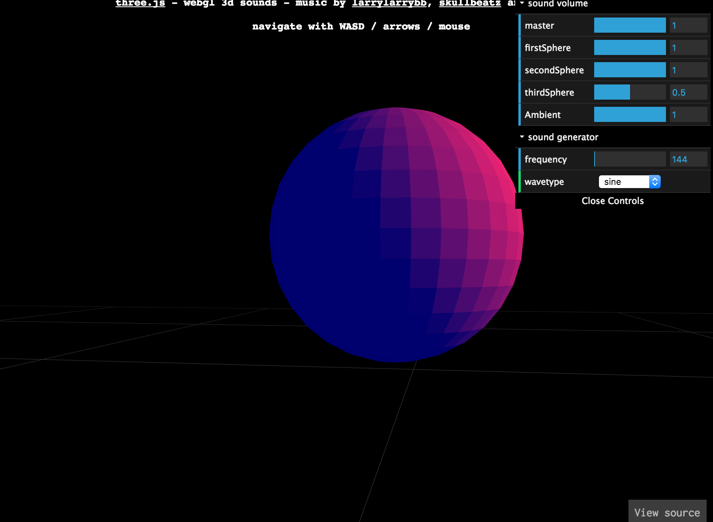
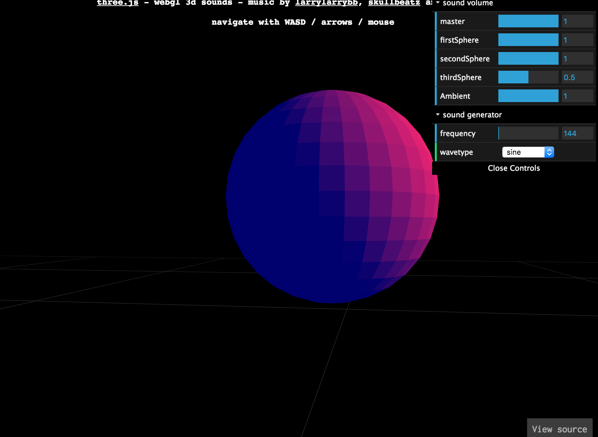

REFERENCE

Google의 힙합 탄생 44주년 기념 이벤트
LP판을 직접 끌어와서 음악을 들을 수 있도록 하고 LP재생도구를 직접 조정할 수 있음
: 직접 조정하는 요소를 참고 할 예정
그래픽 디자이너 이혜인씨의 작품
: 요소중에 텔레비전을 직접 조정하는 모습이 '조정'이미지 참고에 좋을 것 같아서 첨부

sound 1
sound 2
Google의 힙합 탄생 44주년 기념 이벤트
LP판을 직접 끌어와서 음악을 들을 수 있도록 하고 LP재생도구를 직접 조정할 수 있음
: 직접 조정하는 요소를 참고 할 예정
그래픽 디자이너 이혜인씨의 작품
: 요소중에 텔레비전을 직접 조정하는 모습이 '조정'이미지 참고에 좋을 것 같아서 첨부
